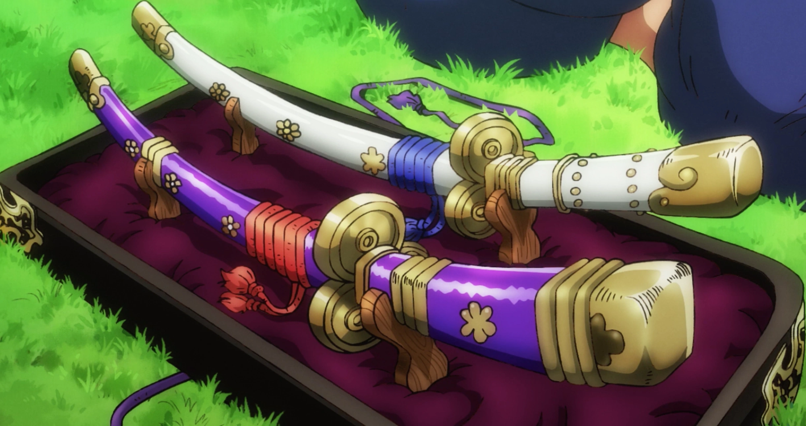

Habilidades en One Piece
Frutas del Diablo:
Las Frutas del Diablo son objetos mágicos que otorgan habilidades especiales a quienes las consumen. Hay tres tipos principales de Frutas del Diablo:

1. Frutas del Diablo Logia: Los usuarios de estas frutas pueden convertirse en un elemento natural y controlarlo a voluntad. Pueden crear, manipular y ser inmunes a su elemento respectivo. Ejemplos de Frutas Logia incluyen:
- Mera Mera no Mi: Concedió a Portgas D. Ace el poder de controlar y generar fuego.
- Goro Goro no Mi: Permitió a Enel controlar el trueno y la electricidad, convirtiéndose en un dios del trueno.
2. Frutas del Diablo Paramecia: Las frutas de este tipo otorgan habilidades únicas y diversas a sus usuarios sin convertirlos en un elemento. Ejemplos de Frutas Paramecia incluyen:
- Gomu Gomu no Mi: Otorgó a Monkey D. Luffy la capacidad de estirar su cuerpo como si fuera goma, lo que le permite ejecutar ataques elásticos y creativos.
- Ope Ope no Mi: Permite a Trafalgar D. Water Law crear una "Room" donde puede manipular objetos y personas a su voluntad.
3. Frutas del Diablo Zoan: Los usuarios de estas frutas pueden transformarse en animales y, en algunos casos, en una forma híbrida entre humano y animal. Ejemplos de Frutas Zoan incluyen:
- Hito Hito no Mi: Permitió a Tony Tony Chopper transformarse en un reno o en una forma híbrida entre humano y reno.
- Neko Neko no Mi, Modelo Leopardo: Le dio a Rob Lucci la capacidad de convertirse en un leopardo o en una forma híbrida, aumentando su fuerza y agilidad.
Haki:

El Haki es una habilidad especial en One Piece que algunos personajes pueden desarrollar. Hay tres tipos de Haki:
1. Haki de Armadura: Permite a los usuarios fortalecer su cuerpo y sus ataques, lo que les permite dañar a usuarios de Frutas del Diablo y objetos resistentes. Ejemplos de personajes con Haki de Armadura incluyen:
- Roronoa Zoro: Puede infundir su espada con Haki de Armadura para aumentar su poder y cortar a través de la resistencia de sus oponentes.
- Luffy: Utiliza el Haki de Armadura para mejorar su resistencia y golpear a oponentes resistentes como Donquixote Doflamingo.
2. Haki de Observación: Permite a los usuarios percibir las intenciones y los movimientos de las personas a su alrededor, incluso si están ocultas o distantes. Ejemplos de personajes con Haki de Observación incluyen:
- Enel: Poseía una habilidad excepcional en el Haki de Observación debido a su conexión con el trueno y podía predecir los movimientos de sus oponentes en la Isla Skypiea.
- Charlotte Katakuri: Era conocido por su aguda percepción en el combate y podía anticipar los movimientos de sus enemigos.
3. Haki del Rey: Es la forma más rara y poderosa de Haki, que permite al usuario ejercer su voluntad de manera dominante sobre los demás, causando desmayos y parálisis en aquellos que no pueden resistirlo. Ejemplos de personajes con Haki del Rey incluyen:
- Gol D. Roger: Fue uno de los pocos conocidos por poseer esta habilidad legendaria y la utilizó para someter a sus enemigos y reclamar su título de Rey de los Piratas.
- Charlotte Linlin (Big Mom): También es una de las raras portadoras de esta habilidad y puede ejercer su voluntad sobre otros de manera imponente.
Espadas y Rangos en One Piece:
Las espadas son una parte importante del mundo de One Piece, y existen diferentes espadas de gran importancia. Los piratas y guerreros utilizan espadas para luchar y defenderse. Además, en el mundo de One Piece, las espadas pueden tener rangos especiales.
Una espada muy famosa es la "Zoro's Sandai Kitetsu," que es una espada de grado superior. Roronoa Zoro, un espadachín de renombre, la utiliza en sus batallas. Su filo es tan afilado que puede cortar acero.
Otra espada legendaria es la "Espada de las Doce Espadas Supremas," que es un conjunto de espadas muy poderosas en el mundo de One Piece, cada una con habilidades únicas. Algunas de las espadas famosas de las Doce Espadas Supremas incluyen:
- Kokuto Yoru: Es la espada del Almirante de la Marina, Dracule Mihawk, y es considerada la espada más poderosa del mundo.
- Wado Ichimonji: La espada de Roronoa Zoro, que es de grado superior y tiene un gran significado para él.